Lab 2.4 - Publish to the Dev Portal (Preview version)¶
Warning
It is important to note that the release used in this lab (2.9.0) is a pre-release and few bugs are still there (cosmetics bugs, mainly). For your information, during the lab building, Nginx developers fixed 6 bugs in less than 4 days. High Five for these Nginx teams.
Note
It is important to note that the developer portal is an NGINX instance. It is separate to the controller. It is deployed as a docker container and utilises a specific tag that lets the controller know that an NGINX instance is the developer portal. NGINX instances acting as dev portals are covered by the API Management licensing just like the gateways.
Deploy new Nginx+ instance for the Dev Portal¶
Find the “DOCKER (NGINX API gw + Bind + Dev Portal)” system in your UDF deployment, click on Access and select SSH.
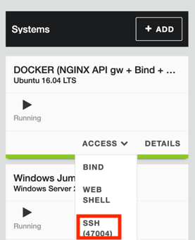
Please Confirm that your NGINX instances are running in your docker environment
sudo docker ps
Note
You can notice 2 NGINX+ instances are running. One for the WebApp and one for the API. What you did in the previous lab was pushed to the right instance.
Start up the Developer Portal instance in docker
sudo docker run --name devportal --add-host controller.nginx-udf.internal:10.1.20.4 -p 10.1.20.12:8090:8090 --restart=always -d nginxpluscont29fixtls
Confirm that your new NGINX plus instance is running and has the name ‘devportal’ by running the docker ps command again.
Note
you will need to wait for the new ‘devportal’ NGINX instance’s agent to start and check in with controller – this can take a couple of minutes.
Access the controller Web GUI and watch the ‘Systems’ area (in Graphs section) on the left for the appearance of your new ‘devportal’ NGINX instance. It should look like this after it successfully registers (name will differ):
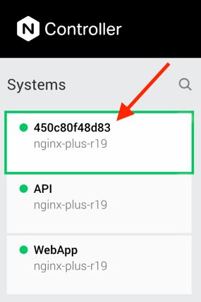
To give it a friendly alias, click on newly registered instance and then click the settings wheel next to the instance name and give the system the name of “devportal”:
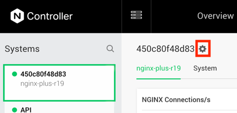
And while in this system properties, also add and type the “devportal” tag and PRESS ENTER to add it. Lower case, one word. The tag is created and can be re-use for next instances if needed.
Note
This tag “devportal” is hardcoded in Nginx controller. You can’t choose another tag at the moment to specify the NGINX+ instance running as a DevPortal.
Click on the “save” button at the bottom of the system properties window. The system properties window will close, and you should see a green banner at the top of the controller window stating, “System Properties were successfully updated”.
Note
If you don’t see the GREEN banner, no worries, this is due to a cosmetic bug in UDF. Click on the instance system, and check the Alias and Tag are set.
Note
If you get the red error banner, you may have made the changes too early and the instance isn’t quite ready. If that occurs, just click the cross on the red error message and go back into system properties to check if the changes are still present. Click save and ensure you get the green banner stating that properties were updated successfully.
Note
The tag is very important as it lets controller know about the developer portal instance for the web portal.
Define all resources and add Dev Portal descriptions to them¶
The next step is to define additional resources so that we can document all of the resources for our API in the developer portal. Click on the “API Management” tab at the top of the Controller GUI and then click on the edit button for the “Arcadia API” definition.
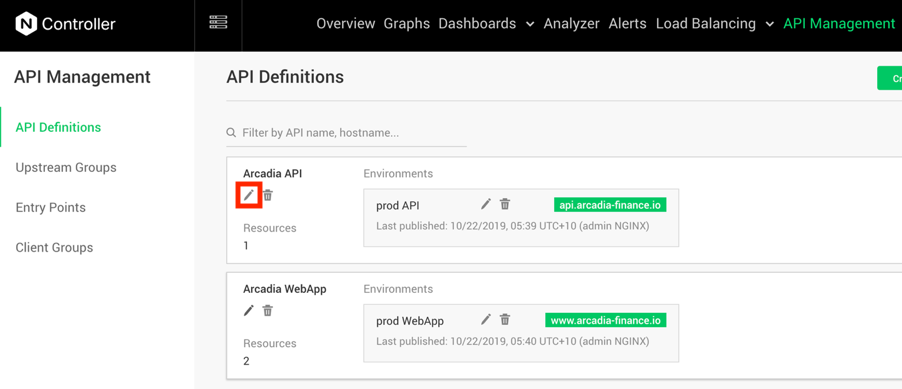
In the Resources section, you will need to click on the ‘edit’ pencil icon next to each resource so that we can update the documentation for each resource which will allow for the developer portal to be populated. Click to edit the “buy stocks” resource.
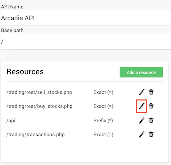
Warning
When adding the resources, there can be issues caused with copy and pasting. It is recommended that you type out the resources.
Click on the Path Prefix and change it from “Prefix (*)” to “Exact (=)” if not already done.
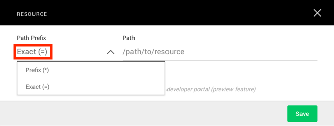
In the Path, verify that it specifies “/trading/rest/buy_stocks.php” (without the quotes). Tick the “Enable Documentation” check box and change the method from “GET” to “POST”.
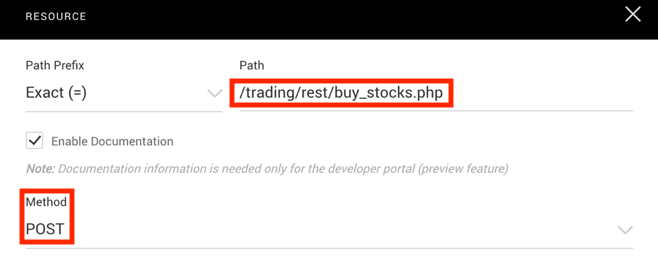
In the description, enter in “Buy stocks” and then click the “Add Parameter” button.
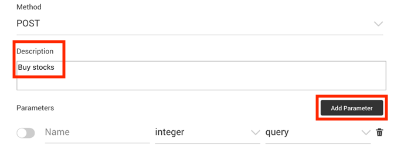
Note
type the names in manually as copy and paste can cause issues.
Enter the following parameters:
- trans_value
- qty
- company
- action
- stock_price
Note
click the “Add Parameter” button to add each additional parameter.
Click the slider next to each parameter to enable them and change the “company” and “action” parameters from integer” to “string”.
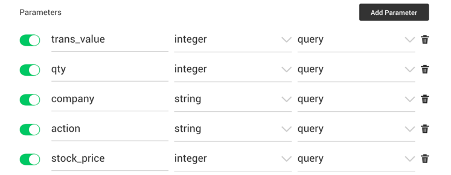
We now need to add in a sample request and a sample response. Copy and paste should work but be careful to ensure you select exactly the text only below and no whitespace. Sample request:
{
"trans_value":312,
"qty":16,
"company":"MSFT",
"action":"buy",
"stock_price":198
}
Click the “Add Response” button and enter in “200” for the response type and “OK” for the description. Then enter in the actual sample response:
{
"status":"success",
"name":"Microsoft",
"qty":"16","amount":"312",
"transid":"722984153"
}
Click save. If you have any syntax errors, then there will be a red bar at the top stating “Validation error: Sample request is invalid, Sample response is invalid”. Check your syntax carefully for errors and / or type out the request and response by hand to remove any whitespace character issues
{kind=link}
Before we push out the changes, we need to also create a developer portal definition for all the other resources in our API. Click the edit icon next to the “/trading/transactions.php (GET)” resource.
Warning
This is a known bug whereby the developer portal cannot be updated if there are any resources that are not defined or include an empty definition.
Tick the “Enable Documentation” checkbox and set the description to “Get transactions”.
Note
there is no option to define the request because the method is GET.
Define the response with 200 OK like previously and the following for the sample response:
{
"yourlastransactions":"MSFT 2000"
}
{kind=link}
Create the other resource definitions, with the appropriate parameters and request & response samples.
Note
you should be able to infer the parameter values and type from the request sample. You should also be able to infer the method (GET or POST) based on whether there is a Request and Response sample or just a Response sample.
//////////////////////////////
POST - Sell stocks
//////////////////////////////
/trading/rest/sell_stocks.php
Request and parameters:
{
"trans_value":212,
"qty":16,
"company":"MSFT",
"action":"sell",
"stock_price":158
}
Response:
{
"status":"success",
"name":"Microsoft",
"qty":"16",
"amount":"212",
"transid":"657598869"
}
//////////////////////////////
POST - Transfert money
/////////////////////////////
/api/rest/execute_money_transfer.php
Request and parameters:
{
"amount":"92",
"account":"2075894",
"currency":"GBP",
"friend":"Vincent"
}
Response:
{
"name":"Vincent",
"status":"success",
"amount":"92",
"currency":"GBP",
"transid":"531320387",
"msg":"The money transfer has been successfully completed"
}
///////////////
Note
Your resources has to look like below. You can delete the /api if it is still there.
{kind=link}
We now need to push our changes. Click the edit icon next to the “prod API” in the “Environments” section.
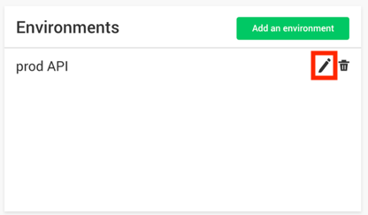
Note
As a reminder, you already created all the routes in the previous lab with the JWT token lab. You can notice the /api route as been updated with the Exact path URI.
Tick the “Update Developer Portal” check box and then click the large “Publish” button directly underneath.
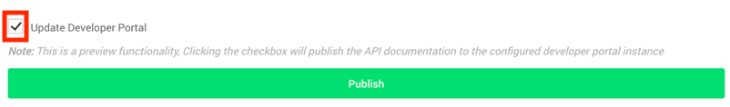You should get a green banner at the top of the screen saying that it has successfully been published.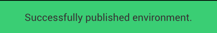
Connect to the Dev Portal¶
To view the developer portal, go into the Windows jump host and you will notice in chrome that there is a bookmark for the developer portal; click this.
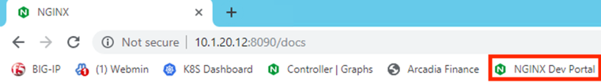You will see that the Arcadia API has been published.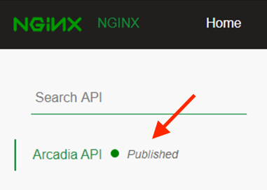
Explore this site and look to verify that the Endpoints, Parameters, Request Sample and Response Samples are present and as we defined them in the Controller.
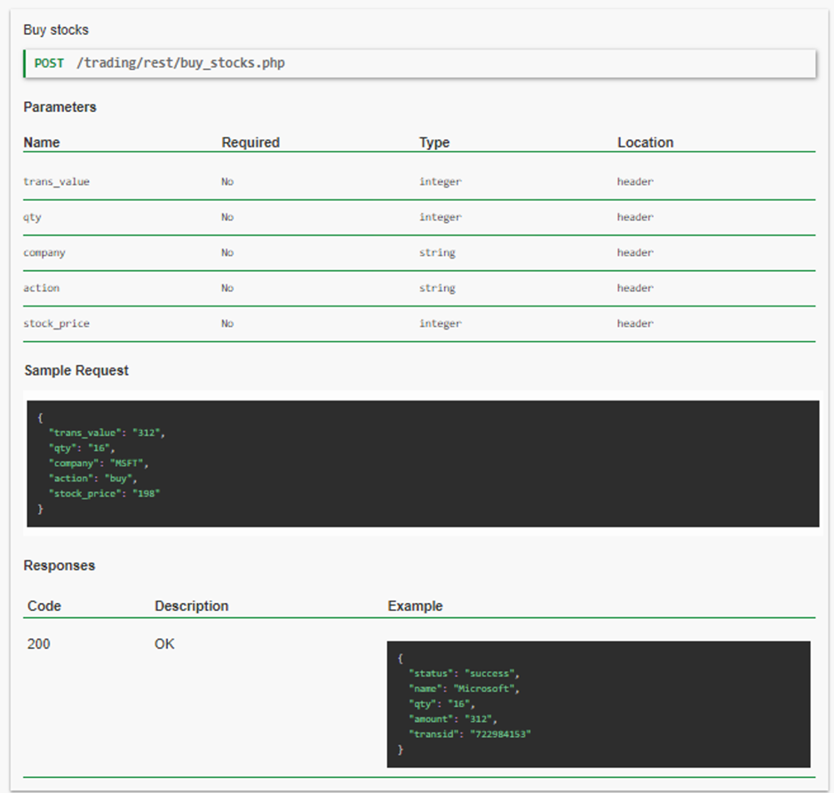